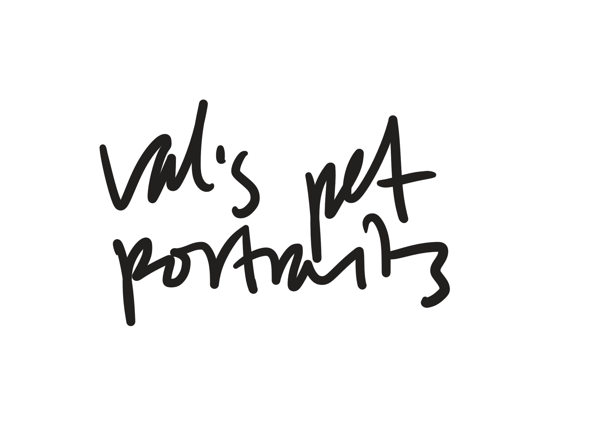
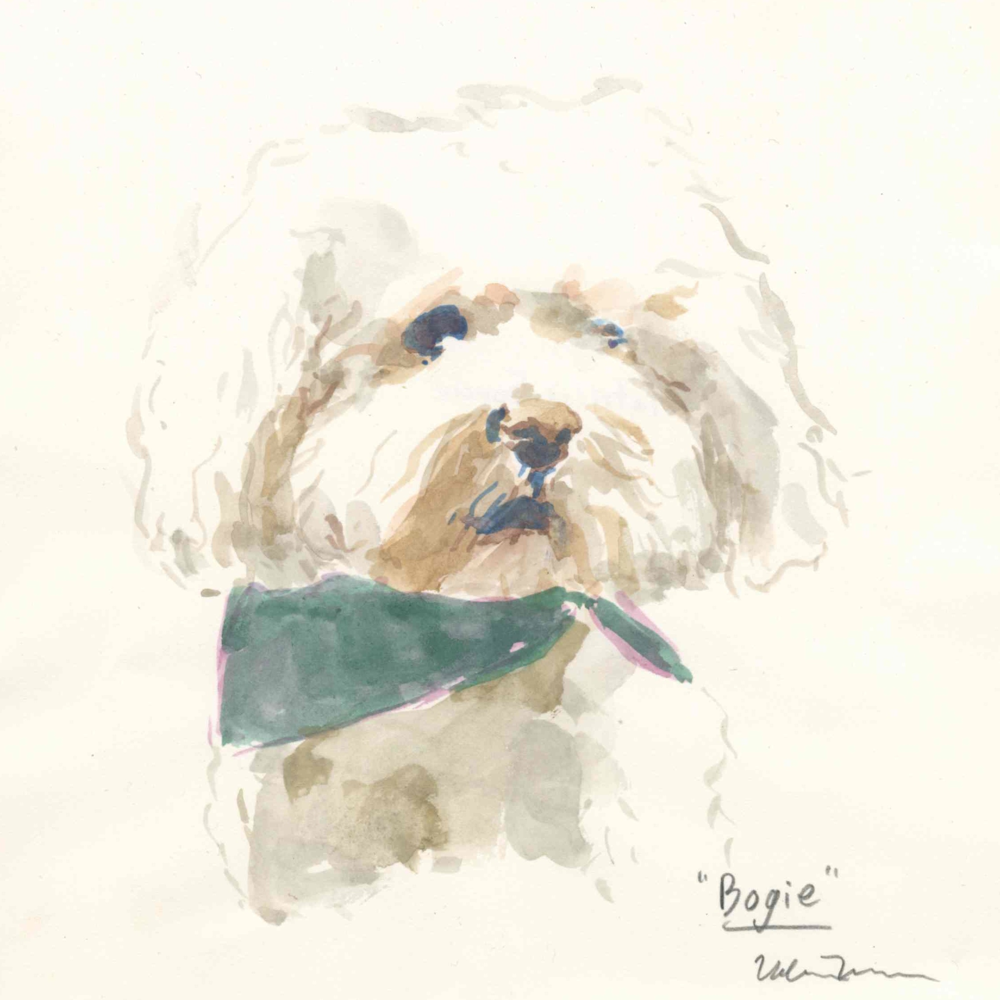
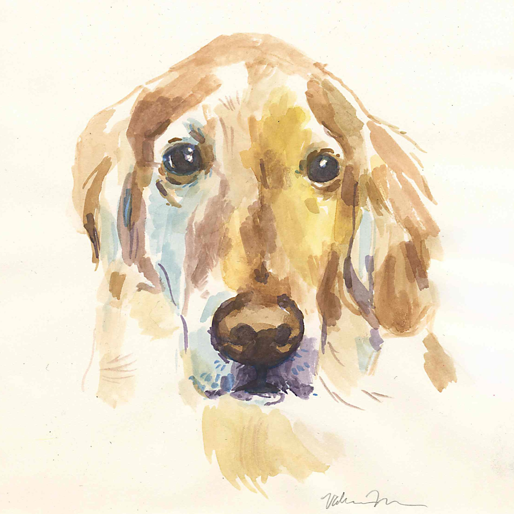
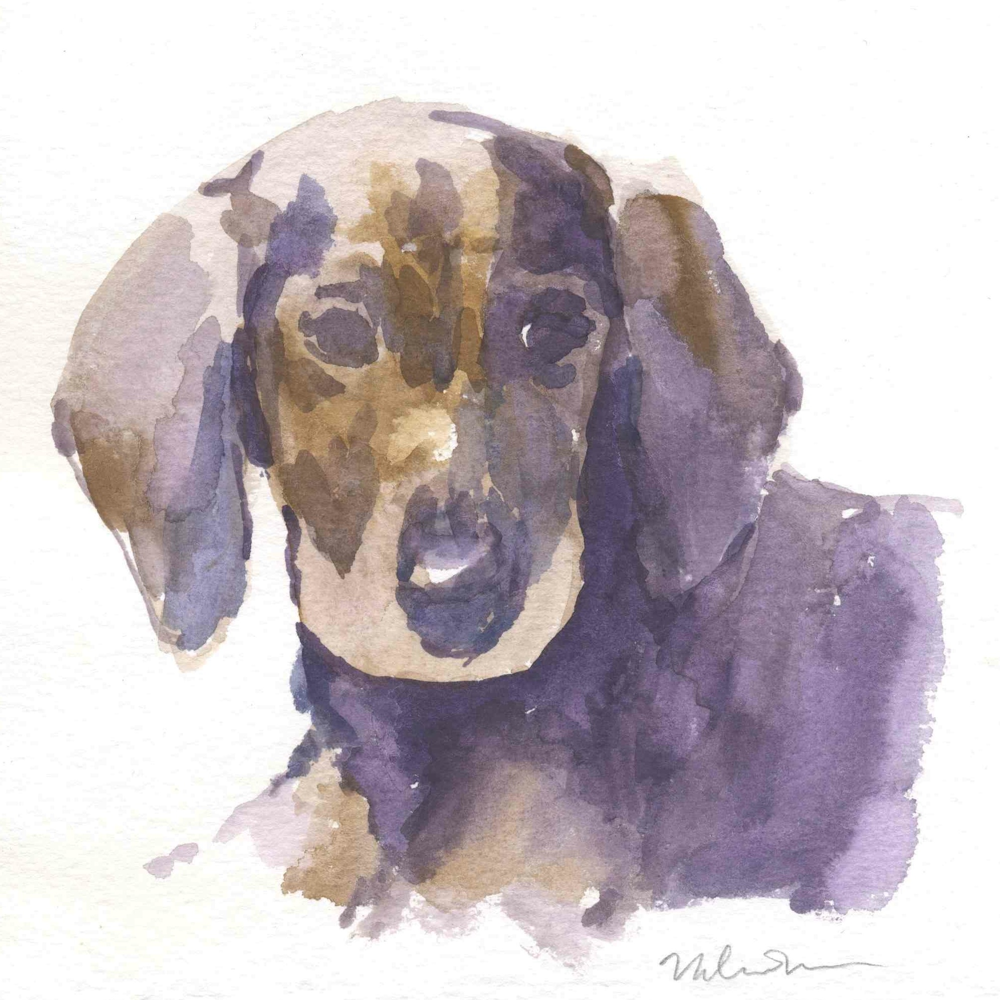
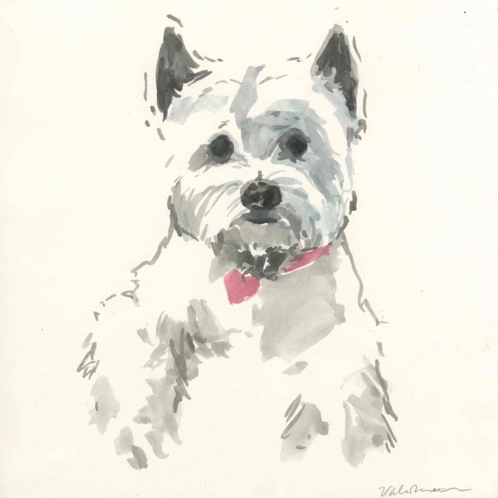
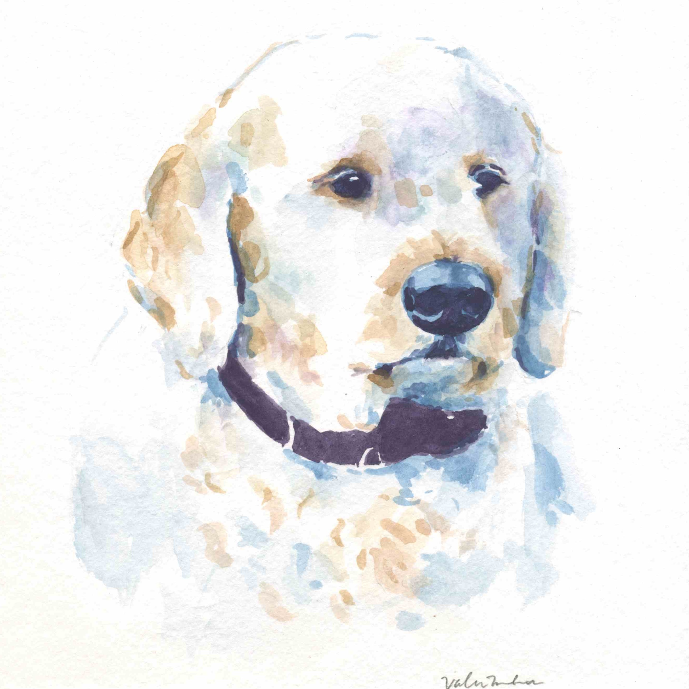
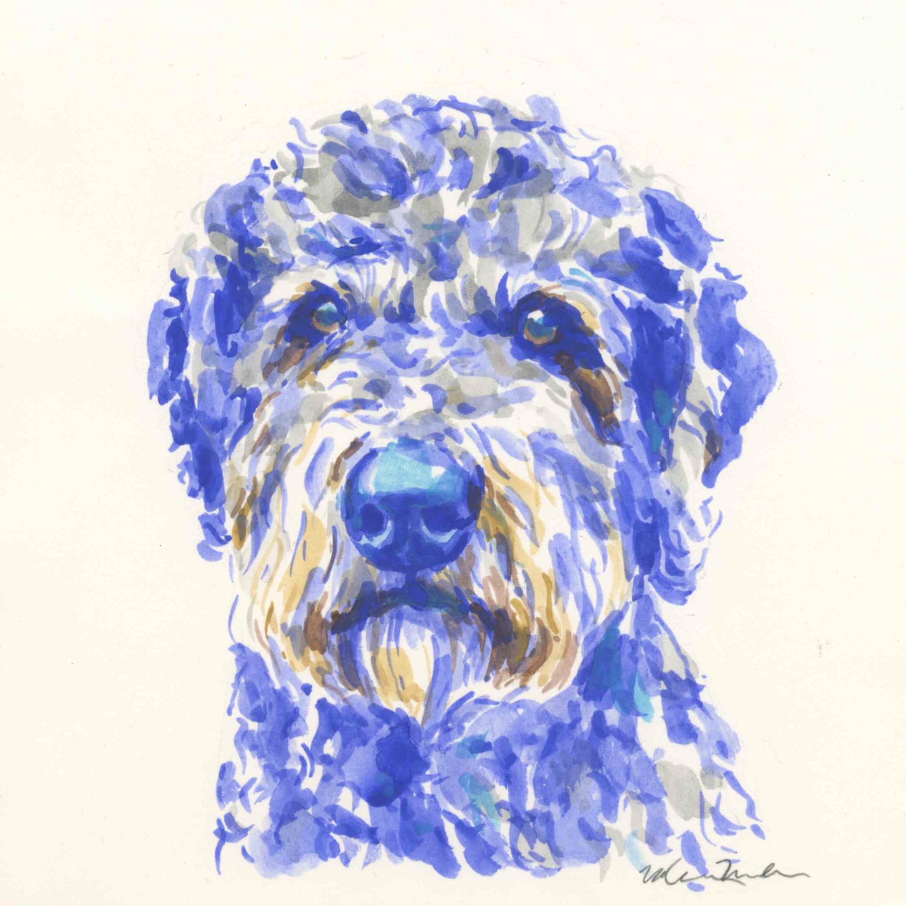
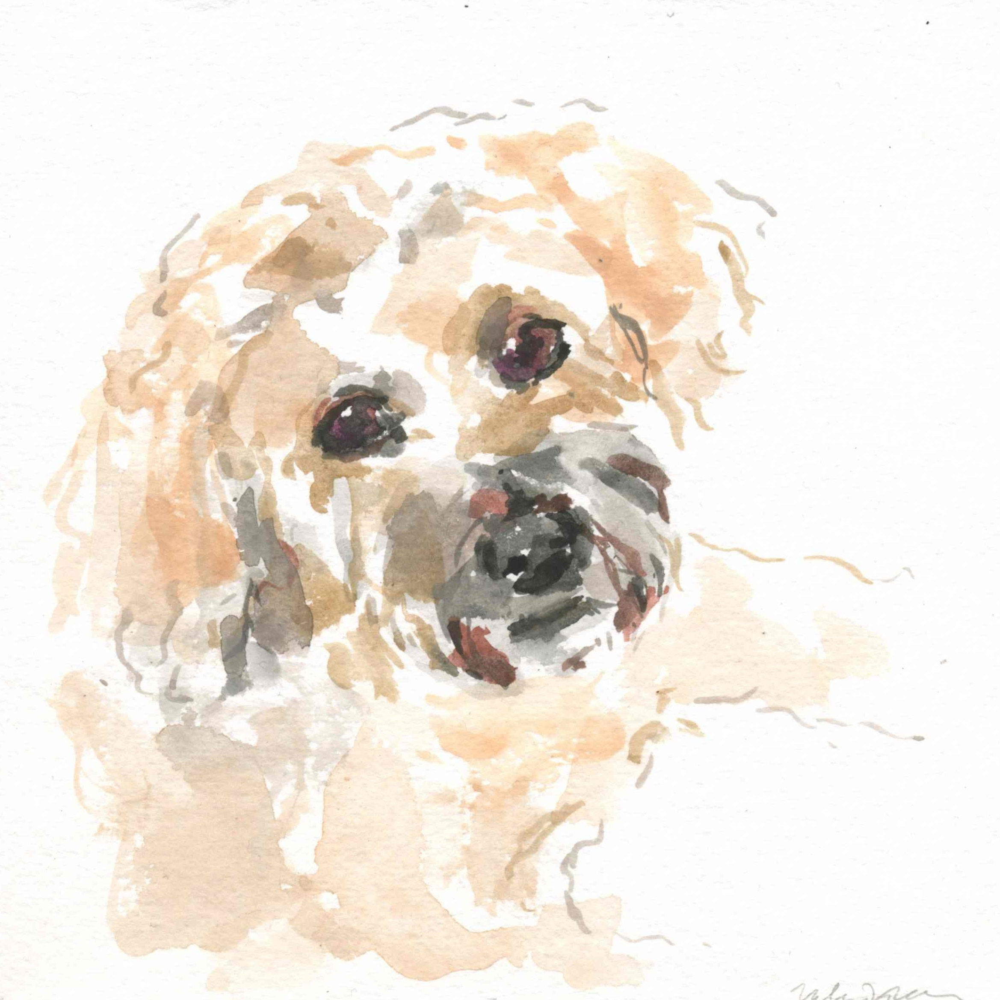
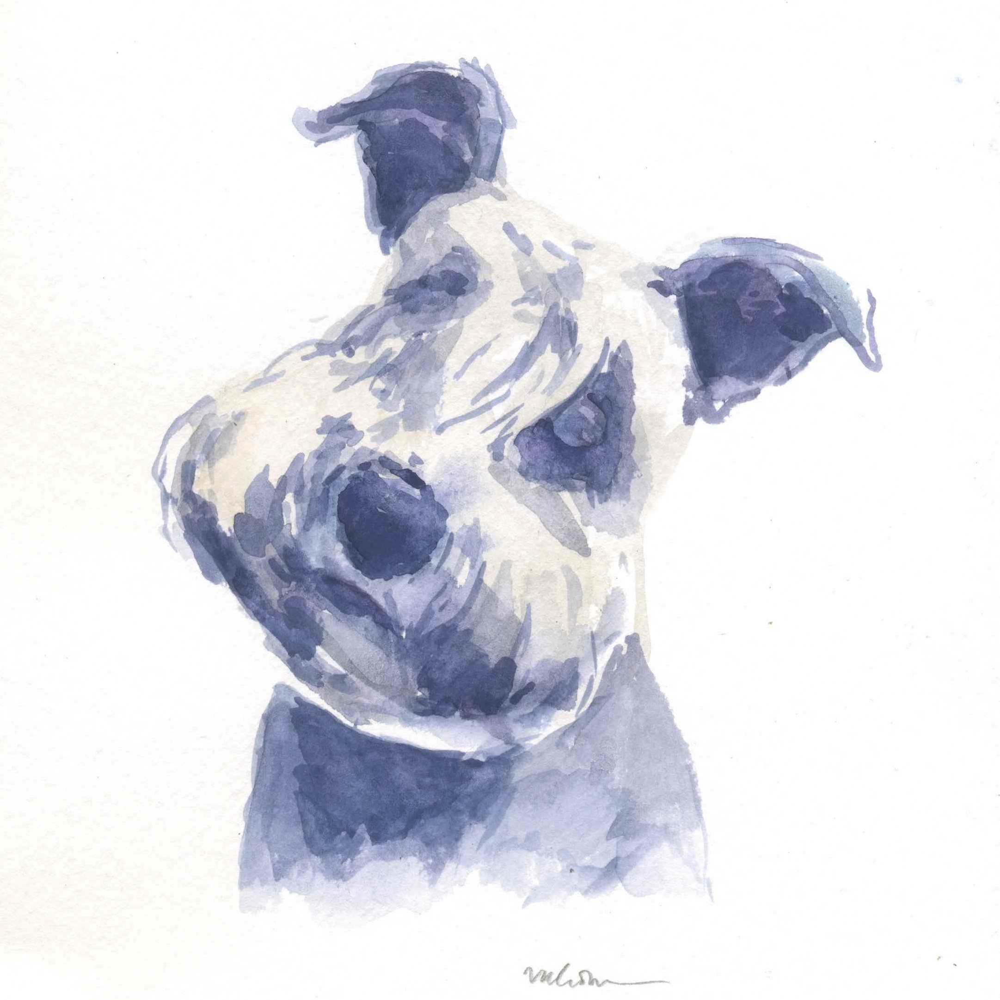
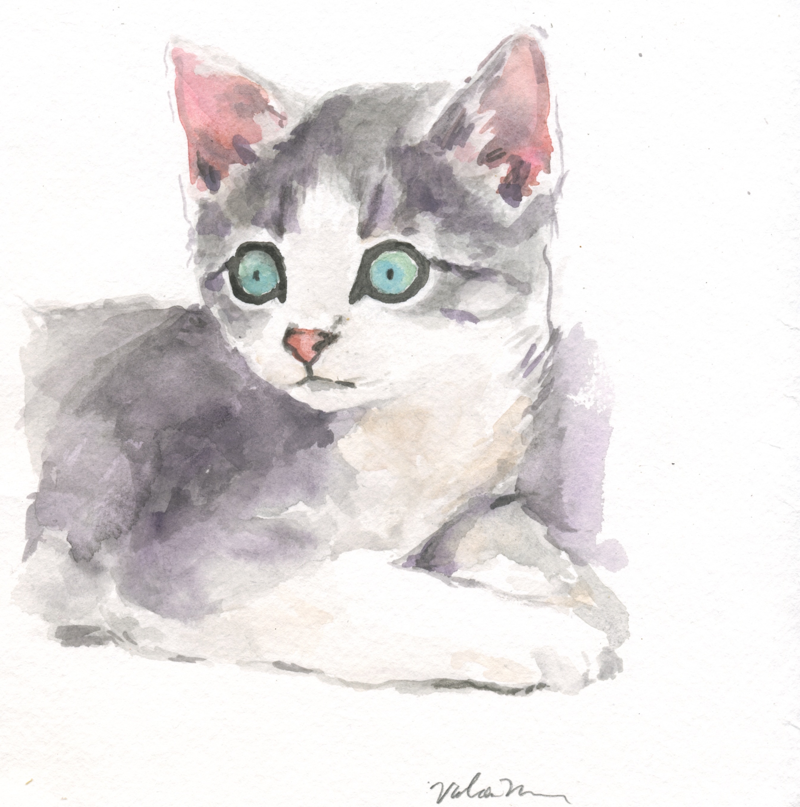

Valerie Nelson is a 21-year-old artist who has been illustrating since she was a young child. She is currently studying at the Rhode Island School of Design and is using the profit from her pet portraits to help fund her studies.
Each pet portrait is painted in watercolour on a 8" x 8" piece of textured white watercolour paper.
If you have any specific size, medium, etc. that you would prefer instead, let me know.
The paintings are depicted directly from a photograph of the pet that the buyer sends within their request email.
The cost of a 8" x 8" watercolor portrait is $50.00 (plus approx. $5 for shipping).
If you choose to have more than one pet in a painting, the cost is $50 per pet ($100.00 for a double portrait).
Website and Images © Valerie Nelson 2015









